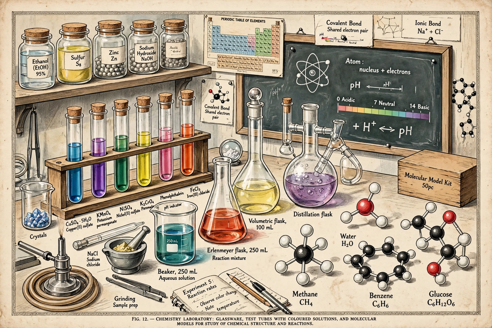

Chemistry is the scientific study of the properties and behaviour of matter, including elements and compounds, their composition, structure, properties, behaviour and the changes they undergo during reactions.

Atoms, elements in the periodic table, molecules, ions, chemical bonds, reactions, acids and bases, oxidation–reduction, thermodynamics and equilibrium. Amount of substance is measured in the mole, with molar mass linking mass to amount.
Chemistry emerged from alchemy; Lavoisier established conservation of mass, Dalton proposed atomic theory, Mendeleev organised the periodic table, and quantum mechanics explained bonding in the 20th century. Historical figures include Robert Bunsen and Fritz Haber.
Organic chemistry studies carbon compounds; inorganic chemistry other elements; physical chemistry applies physics; analytical chemistry identifies and quantifies substances, e.g. by X-ray photoelectron spectroscopy; biochemistry studies living systems.